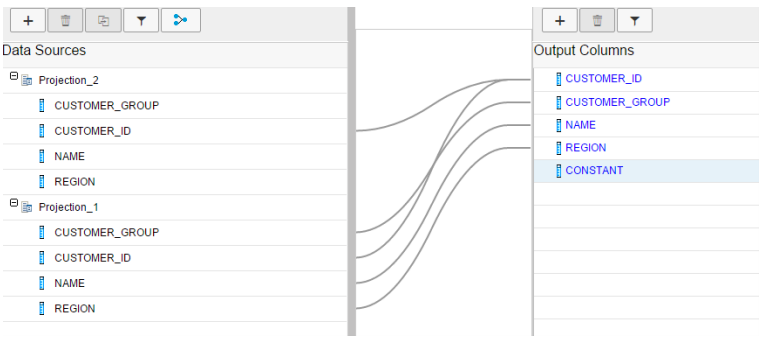
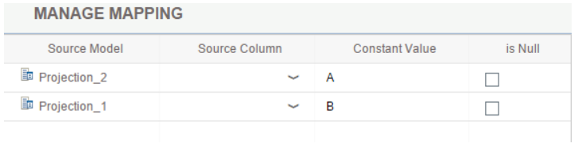

The value of the Empty Union Behavior property for a data source in the union node, helps modeler determine whether any queries on union nodes with constant output columns shall return values if no other columns from the data source is queried.
This property is useful, for example, for value help queries in applications. You can select either No Row or Row with Constant as values for the Empty Union Behavior property. Select the data source in the mapping definition and in the Properties tab define the values for this property based on your business requirement.
For understanding the Empty Union Behavior property and how the value this property determines the output data, consider the following mapping definition in a union node: 
Constant values A and B are defined for Projection_1 and Projection_2 using the constant column CONSTANT.

If the Empty Union Behavior property is set to No Row, no data from Projection _2 appears in the output data. In the other words, only data from Projection_1 appears in the output data.
If the Empty Union Behavior property is set to Row with Constant, then the output data includes one record from Projection _2. In this one record, the constant value A appears for the CONSTANT column and values for all other columns appears as null.